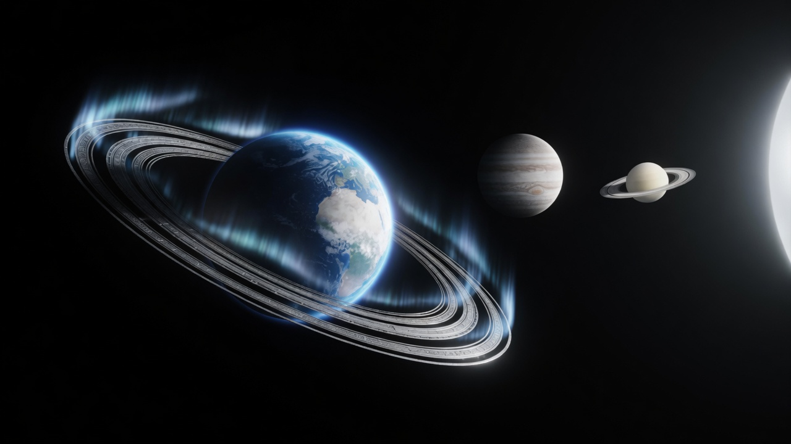

One hub for the free spine: cast your chart, watch the sky, keep a Moment, return Daily — then go deeper when you want.
The living sky
Same brand art that powers the homepage hero — engine stills and the cinema system plate.
Interactive photoreal WebGL lives in the Live Sky Observatory: one scene, one Three.js stack, no conflicts.

Brand cinema plate · same sky language as the hero